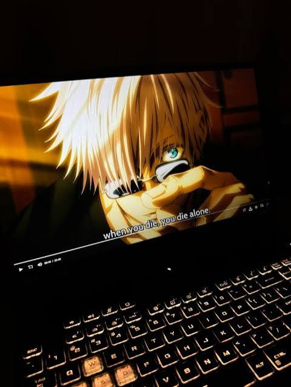

THINGS I ENJOY
My Hobbies & Interests
Here are some of the things that make me happy.

01. Music
I enjoy listening to music because it helps me relax, express my feelings, and enjoy my day.

02. Watching Anime
Watching anime is one of my favorite ways to spend my free time.

03. Reading Manwha
I love reading manwha because it allows me to immerse myself in different worlds and stories.

04. Playing Basketball and Chess
I enjoy playing basketball and chess because they help me stay active and sharp.